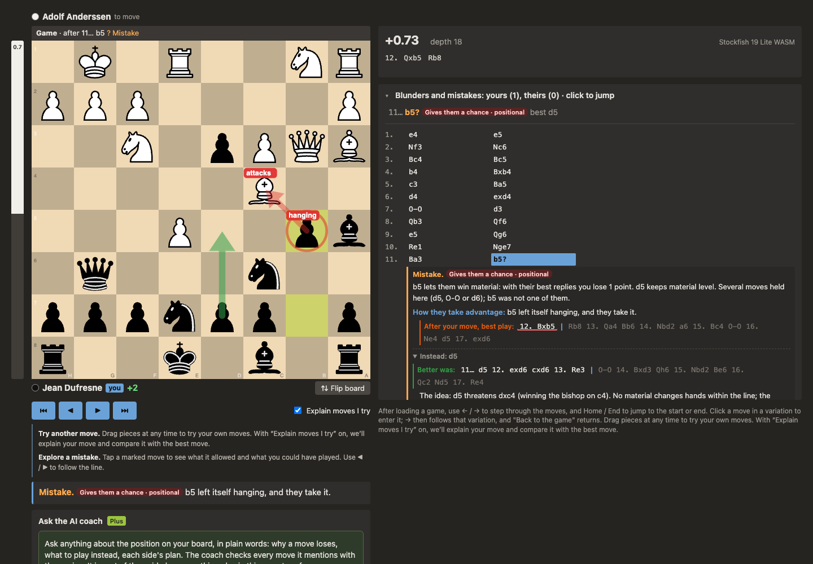

Try the real app
Follow an annotated mistake
Open the Evergreen Game at 11…b5. Follow the played line to see the app’s arrows, labels, and move captions.
Open this review in the app →The pawn on b5 is marked on the board. Click Bxb5 in “After your move, best play” to see the capture, then follow the green Better was line.

What you can do
The example opens a precomputed public game at one explained mistake. Use the normal move list, on-board annotations, captions, and Compare button. Drag a piece with “Explain moves I try” enabled to get a fresh explanation from Stockfish on your device.
The review opens without waiting for a full game analysis. Live engine evaluation and explanations of moves you try still take computation time.
Source game
Adolf Anderssen – Jean Dufresne · The Evergreen Game · 1852.01.01.
Download the game (PGN). The selected explanation comes unchanged from the app’s public review fixtures, recorded at 1,000,000 nodes per position. Only this one moment is included in the demonstration; your saved reviews are not changed.